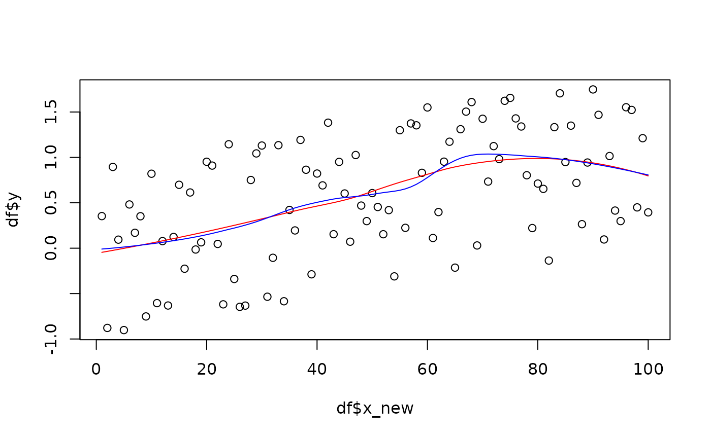

These functions are used internally by diachrony_ and synchrony_ functions,
but they may be of interest for custom constructions. See Details.
Arguments
- df
tibble(), typically after shake. Must have a .x and and .y columns.- x_prediction
numeric vector on x values on which to predict
- ...
additional parameters for each predictors (see Details)
Details
In df, x_new and y columns must be present. This ease and fasten permutations
because the raw data is prepared once for all.
Most of these functions are thin wrappers around built-in predictors such as
stats::loess(), stats::lm(), mgcv::gam(), etc.
These predictors follow these steps:
fit the
y(value of interest) using the (typically shaked)x. We thus obtain a continuous model that we use to:predict new
yvalues on a range ofx. Thesexvalues are typically fixed, so that we can later obtain confidence intervals, etc. for each of these points.
They thus aim at summarising new y values at fixed x values, using
predict_bin makes no intermediate
adjustment and summarises raw value either using mean or median (see Examples)
Examples
# replicability
set.seed(2329)
x_pred <- 1:100
df <- data.frame(x_new=x_pred, y=runif(100, -1, 1) + x_pred/100)
x_pred <- 1:100
pred_075 <- predictor_loess(df, x_pred)
pred_05 <- predictor_loess(df, x_pred, span=0.5)
plot(df$x_new, df$y)
lines(pred_075$x_new, pred_075$y, col="red")
lines(pred_05$x_new, pred_05$y, col="blue")
